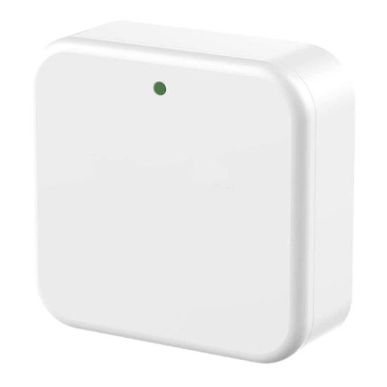

<ion-header class="ion-no-border">
  <ion-toolbar >
    <ion-buttons slot="start" >
      <ion-back-button defaultHref="/securitymodule" ></ion-back-button>
    </ion-buttons>
    <ion-title style="text-align: center;">Add Gateway
    </ion-title>
  </ion-toolbar>
</ion-header>
<ion-content>
  <div>
    <p id="pp">Re Connect the power</p>
  </div>
  <div style="text-align: center;">
    
  </div>
  <div>
    <p id="pp">Click next when the light flash alternately</p>
  </div>
  <ion-button expand="full" (click)="addGateway()">Next</ion-button>

  
</ion-content>